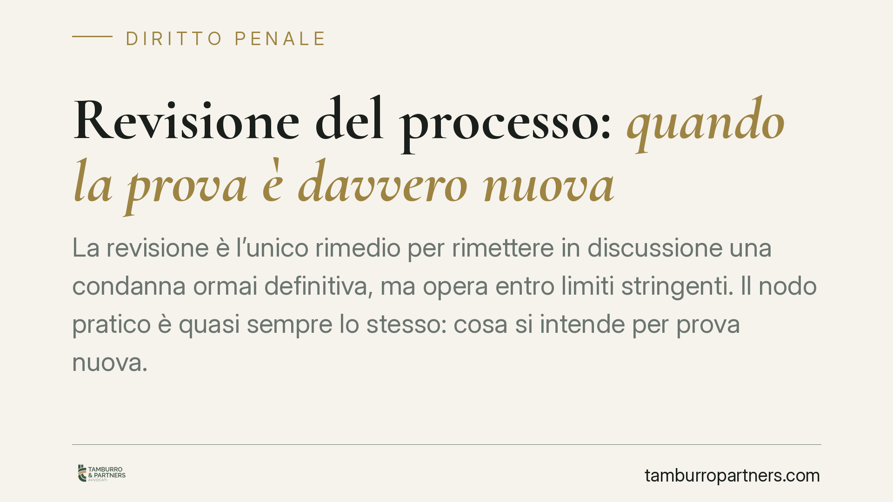

Revisione del processo: quando la prova è davvero "nuova"
La revisione è l'unico rimedio per rimettere in discussione una condanna ormai definitiva, ma opera entro limiti stringenti. Il nodo pratico è quasi sempre lo stesso: cosa si intende per "prova nuova". Distinguerla dalla mera rilettura del materiale già valutato è decisivo, perché da questa qualificazione dipende l'ammissibilità stessa dell'istanza.

Il fatto e il perché conta
Nel dibattito penalistico ricorre con frequenza il tema della revisione delle condanne irrevocabili. È un istituto che attira l'attenzione ogni volta che un condannato, magari dopo anni, ritratta una confessione o annuncia nuovi elementi a proprio favore.
Il punto giuridico è più tecnico di quanto appaia. Non basta affermare l'esistenza di prove nuove: occorre che siano tali secondo la legge e che abbiano una precisa capacità dimostrativa. Su questo si concentra la nostra analisi, senza ricostruire vicende processuali specifiche che richiederebbero la verifica puntuale degli atti.
Inquadramento normativo
La revisione è disciplinata dagli artt. 629 e seguenti del codice di procedura penale. Si tratta di un mezzo di impugnazione straordinario: interviene su una sentenza di condanna già passata in giudicato, cioè non più modificabile con gli strumenti ordinari (appello e ricorso per cassazione). Proprio per questo la legge ne circoscrive rigorosamente i presupposti.
L'art. 630 c.p.p. elenca i casi tassativi. Quello più invocato è la lettera c): l'ipotesi in cui, dopo la condanna, sopravvengano o si scoprano nuove prove che, sole o unite a quelle già valutate, dimostrano che il condannato deve essere prosciolto a norma dell'art. 631 c.p.p. Il richiamo all'art. 631 è essenziale: la revisione è ammessa solo se gli elementi addotti sono idonei a dimostrare, se accertati, che la persona deve essere prosciolta. Non basta un dubbio generico o un elemento astrattamente favorevole; serve una potenzialità dimostrativa orientata all'assoluzione.
Sulla nozione di "prova nuova" la giurisprudenza di legittimità è intervenuta a più riprese. L'orientamento consolidato considera nuove non solo le prove sopravvenute o scoperte dopo il giudicato, ma anche quelle già esistenti e non acquisite, o acquisite ma non valutate. Resta però ferma una linea di confine: non è prova nuova la semplice rivalutazione critica del materiale già esaminato dai giudici di merito.
Prova nuova o rilettura degli atti?
È qui che si gioca la partita. Chi propone la revisione tende a presentare come "nuova" una diversa interpretazione di elementi già presenti nel fascicolo. Ma riproporre una lettura alternativa di intercettazioni, testimonianze o consulenze già discusse non integra un elemento nuovo: equivale a chiedere un quarto giudizio sul merito, che la revisione non consente.
Lo stesso vale per la ritrattazione di una confessione. Il fatto che un imputato ritratti dichiarazioni rese in precedenza non costituisce, di per sé, prova nuova. La ritrattazione è essa stessa una dichiarazione da valutare, spesso meno attendibile di quella originaria, e non ribalta automaticamente l'accertamento compiuto. Occorrono elementi ulteriori, esterni e verificabili, che ne sostengano la credibilità.
Implicazioni pratiche
Per chi valuta un'istanza di revisione, la conseguenza è concreta. La corte d'appello competente compie un vaglio preliminare di ammissibilità: se l'istanza si fonda su una mera rilettura degli atti, viene dichiarata inammissibile senza esame nel merito.
L'inammissibilità comporta di regola la condanna alle spese processuali. Va detto con precisione: la decisione di inammissibilità non produce una preclusione assoluta. Una nuova istanza resta possibile, ma solo se fondata su elementi effettivamente diversi e ulteriori rispetto a quelli già respinti. Riproporre gli stessi argomenti espone a una seconda inammissibilità.
Cosa fare in concreto
- Verificate la natura dell'elemento. Chiedetevi se si tratta di una prova mai valutata dai giudici o solo di una diversa lettura di atti già esaminati: solo la prima apre la strada alla revisione.
- Misurate la capacità dimostrativa. L'elemento deve essere idoneo, se accertato, a dimostrare il proscioglimento ex art. 631 c.p.p.; un dato genericamente favorevole non basta.
- Documentate la novità in modo verificabile. Raccogliete atti, perizie o testimonianze con estremi certi e riscontri esterni, soprattutto in caso di ritrattazione.
- Valutate gli strumenti alternativi. Se i presupposti della revisione non sussistono, considerate il ricorso alla Corte europea dei diritti dell'uomo o le iniziative proponibili in fase esecutiva.
- Non riproponete gli stessi argomenti. Dopo un'inammissibilità, una nuova istanza ha senso solo su elementi diversi e ulteriori.
Conclusione
La revisione tutela un valore fondamentale: correggere gli errori giudiziari definitivi. Ma resta un rimedio eccezionale, non un terzo grado di giudizio mascherato. Consigliamo di misurare con rigore la solidità e la novità del quadro probatorio prima di avviare l'iniziativa.
Contributo informativo a cura di Tamburro & Partners - Avv. Giuseppe Tamburro. Non costituisce parere legale.
Ogni condominio ha una storia a sé.
Se gestisci un'amministrazione e vuoi un confronto su una specifica questione condominiale, scrivi allo studio. Ti rispondiamo entro un giorno lavorativo.